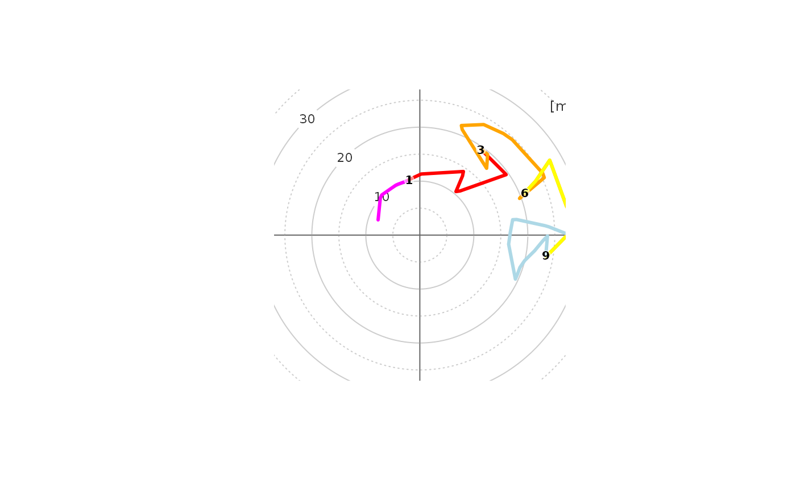

Plot rawinsonde hodograph to show changes in wind speed and direction with height
sounding_hodograph( ws, wd, altitude, max_hght = 12000, max_speed = 25, lab_hghts = c(0, 1, 3, 6, 9, 12), ... )
| ws | wind speed [knots] |
|---|---|
| wd | wind direction [azimuth in degrees] |
| altitude | altitude [m] (can be above sea level or above ground level as function always consider first level as surface, i.e h = 0 m) altitude [m] |
| max_hght | maximum altitude [km] to be considered on the hodograph, 12 km used by default |
| max_speed | displayed range of the drawn hodograph [m/s], 25 m/s used as default |
| lab_hghts | height labels [km] to be drawn on the hodograph, 0, 1, 3, 6, 9, 12 used by default; NULL for skipping labels |
| ... | other graphical parameters to be used with plot() function |
hodograph plot
#> [1] "http://weather.uwyo.edu/cgi-bin/sounding?region=europe&TYPE=TEXT%3ALIST&YEAR=2001&MONTH=05&FROM=1000&TO=1000&STNM=72649"#>sounding_hodograph(ws = chanhassen$ws, wd = chanhassen$wd, altitude = chanhassen$altitude,max_speed = 40)